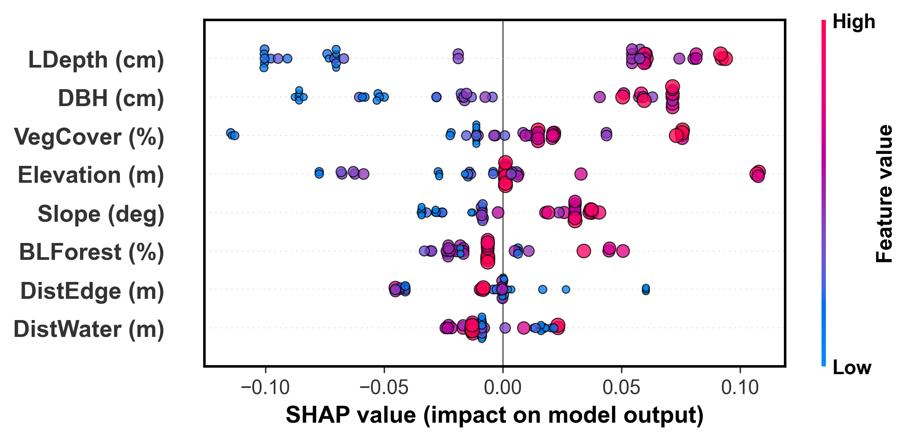

<!doctype html>
<html lang="en">
<head>
  <meta charset="utf-8" />
  <meta name="viewport" content="width=device-width, initial-scale=1" />
  <title>Sasakia charonda Habitat Suitability - Namegawa Town</title>
  <meta name="description" content="Interactive visualization of machine learning-based habitat suitability assessment for Sasakia charonda">

  <!-- Leaflet -->
  <link
    rel="stylesheet"
    href="https://unpkg.com/leaflet@1.9.4/dist/leaflet.css"
    integrity="sha256-p4NxAoJBhIIN+hmNHrzRCf9tD/miZyoHS5obTRR9BMY="
    crossorigin=""
  />
  <script
    src="https://unpkg.com/leaflet@1.9.4/dist/leaflet.js"
    integrity="sha256-20nQCchB9co0qIjJZRGuk2/Z9VM+kNiyxNV1lvTlZBo="
    crossorigin=""
  ></script>

  <!-- GeoPackage -->
  <script src="https://unpkg.com/@ngageoint/geopackage@4.2.6/dist/geopackage.min.js"></script>
  <script src="https://unpkg.com/@ngageoint/leaflet-geopackage@4.1.3/dist/leaflet-geopackage.min.js"></script>

  <style>
    html, body { 
      height: 100%; 
      margin: 0; 
      font-family: -apple-system, BlinkMacSystemFont, "Segoe UI", Roboto, "Helvetica Neue", Arial, sans-serif; 
    }
    #map { 
      height: 100%; 
      width: 100%; 
      background: #f0f4f7; 
    }

    /* ===== Layers control (左上) - シンプル化 ===== */
    .leaflet-control-layers {
      font-size: 14px;
      transition: all .2s ease;
      border-radius: 8px;
      background: rgba(255, 255, 255, 0.95);
    }
    .leaflet-control-layers-expanded {
      padding: 10px 14px 10px 10px;
      min-width: 150px;
    }
    .leaflet-control-layers-base,
    .leaflet-control-layers-overlays {
      margin: 5px 0;
    }
    .leaflet-control-layers label { 
      display: flex;
      align-items: center;
      margin: 4px 0;
      cursor: pointer;
    }
    .leaflet-control-layers input[type="radio"],
    .leaflet-control-layers input[type="checkbox"] {
      margin: 0 8px 0 0;
    }

    /* 最小化ボタン */
    .minimize-btn {
      position: absolute; 
      top: 8px; 
      right: 8px;
      width: 20px; 
      height: 20px;
      border: 1px solid #d0d0d0;
      border-radius: 3px; 
      background: #fff; 
      cursor: pointer;
      font: 14px/18px Arial, sans-serif;
      color: #666;
      display: flex;
      align-items: center;
      justify-content: center;
      transition: all .15s;
      z-index: 1;
    }
    .minimize-btn:hover { 
      background: #f4f4f4; 
      border-color: #999;
    }
    .is-minimized .leaflet-control-layers-list { display: none !important; }

    /* ===== 統計パネル (デスクトップのみ) ===== */
    .stats-panel.leaflet-control {
      background: rgba(255, 255, 255, 0.95);
      padding: 10px 14px;
      border-radius: 8px;
      box-shadow: 0 2px 8px rgba(0,0,0,0.1);
      font-size: 12px;
      min-width: 180px;
    }
    .stats-panel h4 {
      margin: 0 0 8px;
      font-size: 13px;
      font-weight: 600;
      color: #2c3e50;
      padding-bottom: 4px;
      border-bottom: 1px solid #e1e4e8;
    }
    .stats-item {
      display: flex;
      justify-content: space-between;
      margin: 4px 0;
    }
    .stats-label {
      color: #5a6c7d;
      font-size: 11px;
    }
    .stats-value {
      font-weight: 600;
      color: #2c3e50;
      font-size: 11px;
    }

    /* ===== フィルターパネル (デスクトップのみ) ===== */
    .filter-panel.leaflet-control {
      background: rgba(255, 255, 255, 0.95);
      padding: 10px 14px;
      border-radius: 8px;
      box-shadow: 0 2px 8px rgba(0,0,0,0.1);
      min-width: 200px;
    }
    .filter-header {
      font-size: 13px;
      font-weight: 600;
      margin-bottom: 8px;
      color: #2c3e50;
      padding-bottom: 4px;
      border-bottom: 1px solid #e1e4e8;
    }
    .filter-range {
      margin: 8px 0;
    }
    .filter-range label {
      display: block;
      font-size: 11px;
      color: #5a6c7d;
      margin-bottom: 3px;
    }
    .filter-slider {
      width: 100%;
      margin: 5px 0;
      cursor: pointer;
    }
    .filter-value {
      text-align: center;
      font-weight: 600;
      font-size: 11px;
      color: #2c3e50;
      padding: 3px;
      background: #f6f8fa;
      border-radius: 3px;
      margin-top: 3px;
    }
    .filter-reset {
      width: 100%;
      padding: 5px;
      margin-top: 6px;
      background: #0366d6;
      color: white;
      border: none;
      border-radius: 3px;
      cursor: pointer;
      font-size: 11px;
      font-weight: 600;
      transition: background .15s;
    }
    .filter-reset:hover { background: #0256c7; }
    .filter-reset:active { transform: translateY(1px); }

    /* ===== Legend (右下) ===== */
    .wf-legend.leaflet-control {
      background: rgba(255, 255, 255, 0.95);
      padding: 10px 12px;
      border-radius: 8px;
      box-shadow: 0 2px 8px rgba(0,0,0,0.1);
      font-size: 12px;
      min-width: 160px;
    }
    .wf-legend .hdr {
      display: flex; 
      align-items: center; 
      justify-content: space-between;
      margin: 0 0 8px; 
      font-weight: 600;
      font-size: 13px;
      color: #2c3e50;
      padding-bottom: 4px;
      border-bottom: 1px solid #e1e4e8;
    }
    .wf-legend .body { 
      display: block; 
    }
    .wf-legend .item {
      display: grid; 
      grid-template-columns: 18px 1fr;
      align-items: center; 
      gap: 8px; 
      margin: 4px 0;
    }
    .wf-legend .swatch {
      width: 18px; 
      height: 18px;
      border-radius: 2px; 
      border: 1px solid rgba(0,0,0,.15);
    }
    .wf-legend .item span:last-child { 
      font-size: 11px;
      color: #2c3e50;
    }
    .wf-legend.is-minimized .body { display: none; }

    /* ===== Popup ===== */
    .wf-popup .leaflet-popup-content-wrapper { 
      border-radius: 8px; 
      overflow: hidden;
    }
    .wf-popup .leaflet-popup-content {
      box-sizing: border-box; 
      width: clamp(280px, 45vw, 600px);
      height: clamp(260px, 45vh, 500px); 
      margin: 8px; 
      overflow: hidden;
    }
    .wf-pop { 
      width: 100%; 
      height: 100%; 
      display: flex; 
      flex-direction: column; 
      gap: 8px;
    }
    .wf-prob { 
      font-size: 14px; 
      font-weight: 600; 
      text-align: center;
      padding: 6px; 
      background: #f6f8fa; 
      border-radius: 4px;
      color: #2c3e50;
    }
    .wf-img-wrap { 
      flex: 1 1 auto; 
      min-height: 0; 
      display: flex; 
      align-items: center; 
      justify-content: center;
      border: 1px solid #e1e4e8; 
      border-radius: 4px; 
      background: #fff;
    }
    .wf-img { 
      width: 100%; 
      height: 100%; 
      object-fit: contain; 
      display: block;
    }
    .wf-link { 
      font-size: 11px; 
      text-align: center;
    }
    .wf-link a { 
      color: #0366d6;
      text-decoration: none;
    }
    .wf-link a:hover { text-decoration: underline; }

    /* ===== Inset Beeswarm ===== */
    .wf-inset.leaflet-control {
      background: rgba(255,255,255,.95); 
      padding: 6px; 
      border-radius: 8px;
      box-shadow: 0 2px 8px rgba(0,0,0,.1);
    }
    .wf-inset img { 
      display: block; 
      max-width: 280px; 
      max-height: 180px;
    }
    .wf-inset .cap { 
      margin-top: 4px; 
      text-align: center; 
      font-size: 10px;
      color: #5a6c7d;
      font-weight: 600;
    }

    /* ===== ポイント ===== */
    .wf-point { 
      cursor: pointer;
    }

    /* ===== Tooltip ===== */
    .leaflet-tooltip {
      font-size: 11px;
      font-weight: 600;
      padding: 4px 8px;
      background: rgba(255, 255, 255, 0.95);
      border: 1px solid #d0d0d0;
      border-radius: 4px;
      box-shadow: 0 2px 4px rgba(0,0,0,0.1);
    }

    /* ===== モバイル対応 ===== */
    @media (max-width: 768px) {
      /* モバイルでは統計とフィルターパネルを非表示 */
      .stats-panel, .filter-panel {
        display: none !important;
      }
      
      /* モバイルではツールチップも非表示 */
      .leaflet-tooltip {
        display: none !important;
      }
      
      .leaflet-control-layers {
        font-size: 13px;
      }
      .leaflet-control-layers-expanded {
        padding: 8px 12px 8px 8px;
      }
      
      .wf-legend {
        font-size: 11px;
        padding: 8px 10px;
        min-width: 140px;
      }
      .wf-legend .hdr {
        font-size: 12px;
      }
      .wf-legend .item {
        grid-template-columns: 16px 1fr;
        gap: 6px;
      }
      .wf-legend .swatch {
        width: 16px;
        height: 16px;
      }
      
      .wf-popup .leaflet-popup-content {
        width: 85vw;
        height: 50vh;
      }
      
      .wf-inset img {
        max-width: 200px;
        max-height: 120px;
      }
      
      .minimize-btn {
        width: 24px;
        height: 24px;
        font-size: 16px;
      }
    }

    @media (max-width: 480px) {
      .wf-legend {
        bottom: 60px;
      }
      .wf-inset {
        max-width: 180px;
      }
      .wf-inset img {
        max-width: 170px;
        max-height: 100px;
      }
    }
  </style>
</head>
<body>
  <div id="map"></div>

  <script>
    (async function () {
      // ===== Configuration =====
      const CONFIG = {
        gpkgPointsUrl: 'data/Probability_of_occurrence.gpkg',
        gpkgStudyUrl: 'data/Study_area.gpkg',
        gpkgStreamUrl: 'data/stream.gpkg',
        waterfallBaseUrl: 'data/waterfall/',
        
        // Visual parameters  
        pointStroke: '#34495e',      // 濃いグレー
        pointStrokeWidth: 1.5,
        pointStrokeOpacity: 0.9,
        pointBaseRadius: 7,
        pointHoverRadius: 9,
        
        // Mobile detection
        isMobile: window.innerWidth <= 768
      };

      // ===== ColorBrewer 9段階 (YlOrRd scheme) =====
      const COLOR_SCHEME = {
        below10: '#ffffcc',     // Very light yellow
        range10_20: '#ffeda0',  // Light yellow
        range20_30: '#fed976',  // Yellow
        range30_40: '#feb24c',  // Light orange
        range40_50: '#fd8d3c',  // Orange
        range50_60: '#fc4e2a',  // Dark orange
        range60_70: '#e31a1c',  // Red-orange
        range70_80: '#bd0026',  // Red
        above80: '#800026'      // Dark red
      };

      function colorForPercent(p) {
        if (p == null) return '#bdbdbd';
        if (p < 10) return COLOR_SCHEME.below10;
        if (p <= 20) return COLOR_SCHEME.range10_20;
        if (p <= 30) return COLOR_SCHEME.range20_30;
        if (p <= 40) return COLOR_SCHEME.range30_40;
        if (p <= 50) return COLOR_SCHEME.range40_50;
        if (p <= 60) return COLOR_SCHEME.range50_60;
        if (p <= 70) return COLOR_SCHEME.range60_70;
        if (p <= 80) return COLOR_SCHEME.range70_80;
        return COLOR_SCHEME.above80;
      }

      // ===== GeoPackage initialization =====
      const { GeoPackageManager, GeoPackageAPI, setSqljsWasmLocateFile } = window.GeoPackage || {};
      const GPM = GeoPackageManager || GeoPackageAPI;
      if (!GPM || typeof GPM.open !== 'function') {
        throw new Error('Failed to initialize GeoPackage library.');
      }
      setSqljsWasmLocateFile((filename) => 
        `https://unpkg.com/@ngageoint/geopackage@4.2.6/dist/${filename}`
      );

      // ===== Map initialization =====
      const map = L.map('map', {
        center: [36.07342672630755, 139.35873321947636],
        zoom: 13,
        zoomControl: true,
        attributionControl: true
      });

      // Create panes
      map.createPane('pane-study');
      map.createPane('pane-streams');
      map.createPane('pane-points');
      map.getPane('pane-study').style.zIndex = 310;
      map.getPane('pane-streams').style.zIndex = 320;
      map.getPane('pane-points').style.zIndex = 330;

      // ===== Base layers =====
      const baseLayers = {
        'OpenStreetMap': L.tileLayer('https://{s}.tile.openstreetmap.org/{z}/{x}/{y}.png', {
          maxZoom: 19,
          attribution: '© OpenStreetMap'
        }),
        'GSI Standard': L.tileLayer('https://cyberjapandata.gsi.go.jp/xyz/std/{z}/{x}/{y}.png', {
          maxZoom: 18,
          attribution: '© GSI Japan'
        }),
        'GSI Pale': L.tileLayer('https://cyberjapandata.gsi.go.jp/xyz/pale/{z}/{x}/{y}.png', {
          maxZoom: 18,
          attribution: '© GSI Japan'
        }),
        'Satellite': L.tileLayer(
          'https://server.arcgisonline.com/ArcGIS/rest/services/World_Imagery/MapServer/tile/{z}/{y}/{x}',
          { maxZoom: 19, attribution: '© Esri' }
        )
      };
      baseLayers['OpenStreetMap'].addTo(map);

      // Scale control
      L.control.scale({ 
        position: 'bottomleft', 
        metric: true, 
        imperial: false, 
        maxWidth: 100 
      }).addTo(map);

      // ===== Layers control with minimize =====
      const overlayLayers = {};
      const layersControl = L.control.layers(baseLayers, overlayLayers, { 
        collapsed: false, 
        position: 'topleft' 
      }).addTo(map);

      const lc = layersControl.getContainer();
      const lcMinBtn = L.DomUtil.create('button', 'minimize-btn', lc);
      lcMinBtn.innerHTML = '−';
      lcMinBtn.title = 'Minimize';
      L.DomEvent.on(lcMinBtn, 'click', (e) => {
        L.DomEvent.stop(e);
        lc.classList.toggle('is-minimized');
        lcMinBtn.innerHTML = lc.classList.contains('is-minimized') ? '+' : '−';
      });

      // ===== Statistics Panel (デスクトップのみ) =====
      let allPoints = [];
      
      if (!CONFIG.isMobile) {
        const statsControl = L.control({ position: 'topright' });
        statsControl.onAdd = function() {
          const div = L.DomUtil.create('div', 'stats-panel leaflet-control');
          div.innerHTML = `
            <h4>Statistics</h4>
            <div class="stats-item">
              <span class="stats-label">Total Points:</span>
              <span class="stats-value" id="totalPoints">0</span>
            </div>
            <div class="stats-item">
              <span class="stats-label">Visible:</span>
              <span class="stats-value" id="visiblePoints">0</span>
            </div>
            <div class="stats-item">
              <span class="stats-label">Mean Prob.:</span>
              <span class="stats-value" id="meanProb">—</span>
            </div>
            <div class="stats-item">
              <span class="stats-label">Max Prob.:</span>
              <span class="stats-value" id="maxProb">—</span>
            </div>
            <div class="stats-item">
              <span class="stats-label">High (>60%):</span>
              <span class="stats-value" id="highCount">0</span>
            </div>
            <div class="stats-item">
              <span class="stats-label">Med (30-60%):</span>
              <span class="stats-value" id="midCount">0</span>
            </div>
            <div class="stats-item">
              <span class="stats-label">Low (<30%):</span>
              <span class="stats-value" id="lowCount">0</span>
            </div>
          `;
          L.DomEvent.disableClickPropagation(div);
          return div;
        };
        statsControl.addTo(map);
      }

      function updateStatistics(points) {
        if (CONFIG.isMobile) return;
        
        const total = points.length;
        const probs = points.map(p => p.probability).filter(p => p != null);
        
        if (probs.length > 0) {
          const mean = probs.reduce((a, b) => a + b, 0) / probs.length;
          const max = Math.max(...probs);
          const high = probs.filter(p => p > 60).length;
          const mid = probs.filter(p => p >= 30 && p <= 60).length;
          const low = probs.filter(p => p < 30).length;
          
          document.getElementById('totalPoints').textContent = total;
          document.getElementById('visiblePoints').textContent = probs.length;
          document.getElementById('meanProb').textContent = mean.toFixed(1) + '%';
          document.getElementById('maxProb').textContent = max.toFixed(1) + '%';
          document.getElementById('highCount').textContent = high;
          document.getElementById('midCount').textContent = mid;
          document.getElementById('lowCount').textContent = low;
        }
      }

      // ===== Filter Panel (デスクトップのみ) =====
      let pointsLayer = null;
      let currentMinProb = 0;
      let currentMaxProb = 100;

      if (!CONFIG.isMobile) {
        const filterControl = L.control({ position: 'topright' });
        filterControl.onAdd = function() {
          const div = L.DomUtil.create('div', 'filter-panel leaflet-control');
          div.innerHTML = `
            <div class="filter-header">Probability Filter</div>
            <div class="filter-range">
              <label>Minimum</label>
              <input type="range" class="filter-slider" id="minProbSlider" 
                     min="0" max="100" value="0" step="5">
              <div class="filter-value" id="minProbValue">≥ 0%</div>
            </div>
            <div class="filter-range">
              <label>Maximum</label>
              <input type="range" class="filter-slider" id="maxProbSlider" 
                     min="0" max="100" value="100" step="5">
              <div class="filter-value" id="maxProbValue">≤ 100%</div>
            </div>
            <button class="filter-reset" id="resetFilter">Reset</button>
          `;
          L.DomEvent.disableClickPropagation(div);
          return div;
        };
        filterControl.addTo(map);

        // Filter event handlers
        setTimeout(() => {
          const minSlider = document.getElementById('minProbSlider');
          const maxSlider = document.getElementById('maxProbSlider');
          const resetBtn = document.getElementById('resetFilter');
          
          if (minSlider) {
            minSlider.addEventListener('input', function(e) {
              currentMinProb = Number(e.target.value);
              document.getElementById('minProbValue').textContent = `≥ ${currentMinProb}%`;
              applyFilter();
            });
          }
          
          if (maxSlider) {
            maxSlider.addEventListener('input', function(e) {
              currentMaxProb = Number(e.target.value);
              document.getElementById('maxProbValue').textContent = `≤ ${currentMaxProb}%`;
              applyFilter();
            });
          }
          
          if (resetBtn) {
            resetBtn.addEventListener('click', function() {
              currentMinProb = 0;
              currentMaxProb = 100;
              document.getElementById('minProbSlider').value = 0;
              document.getElementById('maxProbSlider').value = 100;
              document.getElementById('minProbValue').textContent = '≥ 0%';
              document.getElementById('maxProbValue').textContent = '≤ 100%';
              applyFilter();
            });
          }
        }, 100);
      }

      function applyFilter() {
        if (!pointsLayer || CONFIG.isMobile) return;
        
        const visiblePoints = [];
        pointsLayer.eachLayer(function(layer) {
          const prob = layer.feature.properties.probability || 
                       getProbAsPercent(layer.feature.properties);
          
          if (prob >= currentMinProb && prob <= currentMaxProb) {
            layer.setStyle({ fillOpacity: 0.85, opacity: 1 });
            visiblePoints.push({ probability: prob });
          } else {
            layer.setStyle({ fillOpacity: 0.1, opacity: 0.3 });
          }
        });
        
        updateStatistics(visiblePoints);
      }

      // ===== Helper functions =====
      function getProbAsPercent(props) {
        const candidates = ['Probablity', 'Probability', 'probability', 'PROBABILITY', 'prob', 'value'];
        let v = null;
        for (const key of candidates) {
          if (props && Object.prototype.hasOwnProperty.call(props, key)) {
            v = Number(props[key]);
            break;
          }
        }
        if (!isFinite(v)) return null;
        if (v >= 0 && v <= 1) return v * 100;
        if (v > 1 && v <= 100) return v;
        return null;
      }

      function prettyName(name) {
        if (!name) return 'Layer';
        const lower = String(name).toLowerCase();
        if (lower === 'probability_of_occurrence') return 'Probability of Occurrence';
        return String(name).replace(/_/g, ' ');
      }

      async function handleWaterfallClick(feature, ev) {
        const props = (feature && feature.properties) || {};
        const id = props.ID ?? props.id ?? props.Id;
        const p = getProbAsPercent(props);
        const probText = p == null ? '—' : p.toFixed(1) + '%';
        
        const popup = L.popup({
          maxWidth: Math.min(600, Math.floor(window.innerWidth * 0.85)),
          className: 'wf-popup',
          autoPan: true,
          keepInView: true,
          autoPanPadding: [30, 30]
        }).setLatLng(ev.latlng).setContent('Loading...').openOn(map);
        
        if (id == null) {
          popup.setContent('This point has no ID attribute.');
          return;
        }
        
        const url = `${CONFIG.waterfallBaseUrl}waterfall_ID${id}_RF.png`;
        const img = new Image();
        
        img.onload = () => {
          popup.setContent(`
            <div class="wf-pop">
              <div class="wf-prob">
                Habitat Suitability: <strong>${probText}</strong>
              </div>
              <div class="wf-img-wrap">
                
              </div>
              <div class="wf-link">
                <a target="_blank" rel="noopener" href="${url}">Open full image →</a>
              </div>
            </div>
          `);
        };
        
        img.onerror = () => {
          popup.setContent(`
            <div style="padding: 20px; text-align: center;">
              <p>SHAP visualization not available</p>
              <p style="font-size: 11px; color: #7f8c8d;">File: ${url}</p>
            </div>
          `);
        };
        
        img.src = url;
      }

      // ===== Load GeoPackage layers =====
      async function addSimpleVectorGpkg(url, paneName, layerLabel, styleObj) {
        const resp = await fetch(url);
        if (!resp.ok) throw new Error(`Failed to fetch ${url}`);
        const buf = await resp.arrayBuffer();
        const gpkg = await GPM.open(new Uint8Array(buf));
        const tables = gpkg.getFeatureTables();
        if (!tables || !tables.length) {
          gpkg.close();
          throw new Error(`No feature layers found in ${url}`);
        }

        const group = L.featureGroup();
        for (const tableName of tables) {
          const lyr = L.geoPackageFeatureLayer([], {
            geoPackageUrl: url,
            layerName: tableName,
            pane: paneName,
            interactive: false,
            style: typeof styleObj === 'function' ? styleObj : () => styleObj
          });
          group.addLayer(lyr);
        }
        group.addTo(map);
        overlayLayers[layerLabel] = group;
        layersControl.addOverlay(group, layerLabel);
        gpkg.close();
        return group;
      }

      // Load Study area
      const studyGroup = await addSimpleVectorGpkg(
        CONFIG.gpkgStudyUrl, 'pane-study', 'Study Area',
        { 
          color: '#2c3e50', 
          weight: 2.5, 
          fillOpacity: 0, 
          fill: false,
          dashArray: '8, 4'
        }
      );
      
      const studyBounds = studyGroup.getBounds();
      if (studyBounds && studyBounds.isValid()) {
        map.fitBounds(studyBounds, { padding: [30, 30] });
      }

      // Load Streams
      await addSimpleVectorGpkg(
        CONFIG.gpkgStreamUrl, 'pane-streams', 'Streams',
        { 
          color: '#2980b9', 
          weight: 2, 
          opacity: 0.7,
          lineCap: 'round',
          lineJoin: 'round'
        }
      );

      // Load Points
      const respPts = await fetch(CONFIG.gpkgPointsUrl);
      if (!respPts.ok) throw new Error(`Failed to fetch points GeoPackage`);
      const arrayBufPts = await respPts.arrayBuffer();
      const gpkgPts = await GPM.open(new Uint8Array(arrayBufPts));
      const featureTablesPts = gpkgPts.getFeatureTables();
      
      if (!featureTablesPts || featureTablesPts.length === 0) {
        throw new Error('No feature layers found in points GeoPackage');
      }

      for (const tableName of featureTablesPts) {
        const layer = L.geoPackageFeatureLayer([], {
          geoPackageUrl: CONFIG.gpkgPointsUrl,
          layerName: tableName,
          pane: 'pane-points',
          pointToLayer: (feature, latlng) => {
            const p = getProbAsPercent(feature.properties);
            
            return L.circleMarker(latlng, {
              radius: CONFIG.pointBaseRadius,
              weight: CONFIG.pointStrokeWidth,
              opacity: CONFIG.pointStrokeOpacity,
              color: CONFIG.pointStroke,    // 最初から濃いグレー
              fillOpacity: 0.85,
              fillColor: colorForPercent(p),
              className: 'wf-point'
            });
          },
          onEachFeature: (feature, lyr) => {
            const p = getProbAsPercent(feature.properties);
            feature.properties.probability = p;
            allPoints.push({ probability: p });
            
            // Hover effects
            lyr.on('mouseover', function() {
              this.setStyle({ 
                radius: CONFIG.pointHoverRadius,
                weight: CONFIG.pointStrokeWidth + 0.5,
                color: '#2c3e50'
              });
              this.bringToFront();
            });
            
            lyr.on('mouseout', function() {
              this.setStyle({ 
                radius: CONFIG.pointBaseRadius,
                weight: CONFIG.pointStrokeWidth,
                color: CONFIG.pointStroke
              });
            });
            
            lyr.on('click', (ev) => handleWaterfallClick(feature, ev));
            
            // Tooltip (デスクトップのみ)
            if (!CONFIG.isMobile) {
              lyr.bindTooltip(`Probability: ${p ? p.toFixed(1) + '%' : '—'}`, {
                permanent: false,
                direction: 'top',
                offset: [0, -10]
              });
            }
          }
        }).addTo(map);
        
        pointsLayer = layer;
        const displayName = prettyName(tableName);
        overlayLayers[displayName] = layer;
        layersControl.addOverlay(layer, displayName);
      }
      
      gpkgPts.close();
      updateStatistics(allPoints);

      // ===== Legend =====
      const legend = L.control({ position: 'bottomright' });
      legend.onAdd = function() {
        const div = L.DomUtil.create('div', 'wf-legend leaflet-control');
        const items = Object.entries({
          [COLOR_SCHEME.below10]: '< 10%',
          [COLOR_SCHEME.range10_20]: '10–20%',
          [COLOR_SCHEME.range20_30]: '20–30%',
          [COLOR_SCHEME.range30_40]: '30–40%',
          [COLOR_SCHEME.range40_50]: '40–50%',
          [COLOR_SCHEME.range50_60]: '50–60%',
          [COLOR_SCHEME.range60_70]: '60–70%',
          [COLOR_SCHEME.range70_80]: '70–80%',
          [COLOR_SCHEME.above80]: '> 80%'
        }).map(([color, label]) => 
          `<div class="item">
            <span class="swatch" style="background:${color}"></span>
            <span>${label}</span>
          </div>`
        ).join('');
        
        div.innerHTML = `
          <div class="hdr">
            <span>Habitat Suitability</span>
            <button class="minimize-btn" title="Minimize">−</button>
          </div>
          <div class="body">${items}</div>
        `;
        
        L.DomEvent.disableClickPropagation(div);
        return div;
      };
      legend.addTo(map);

      // Legend minimize
      const lg = legend.getContainer();
      const lgMinBtn = lg.querySelector('.minimize-btn');
      lgMinBtn.addEventListener('click', (e) => {
        e.stopPropagation();
        lg.classList.toggle('is-minimized');
        lgMinBtn.innerHTML = lg.classList.contains('is-minimized') ? '+' : '−';
      });

      // ===== Inset Beeswarm =====
      const inset = L.control({ position: 'bottomleft' });
      inset.onAdd = function() {
        const div = L.DomUtil.create('div', 'wf-inset leaflet-control');
        div.innerHTML = `
          
          <div class="cap">SHAP Feature Importance</div>
        `;
        L.DomEvent.disableClickPropagation(div);
        return div;
      };
      inset.addTo(map);

      // ===== Mobile adjustments =====
      if (CONFIG.isMobile) {
        CONFIG.pointBaseRadius = 8;
        CONFIG.pointHoverRadius = 10;
        map.options.tap = true;
        map.options.tapTolerance = 40;
      }

    })().catch((err) => {
      console.error('Initialization error:', err);
      alert('Failed to initialize the map viewer.\n' + err.message);
    });
  </script>
</body>
</html>
